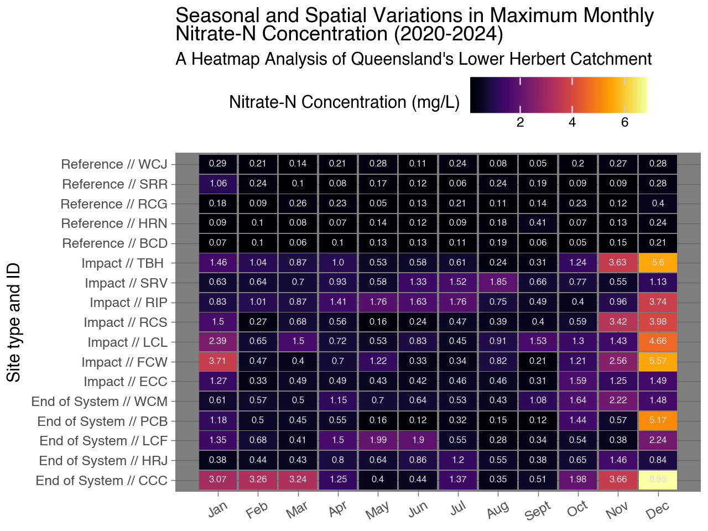

Water Hot Plot: Fine-Scale Water Quality Visualization with Plotnine
2024 Plotnine Competition Submission
Author
Cameron Roberts
Introduction
I am pleased to submit this Quarto document for the 2024 Plotnine competition. This visualization demonstrates the capabilities of Plotnine in creating compelling and informative data representations.
Visualization Approach
I’ve adapted a successful visualization concept I had originally developed in R using ggplot2, translating and enhancing it with Plotnine. While I initially explored using a ridgeline plot for data concentration visualization, I discovered that a heatmap implementation in Plotnine yielded surprisingly effective results, surpassing my expectations from earlier attempts.
Data Source and Description
The visualization is based on fine-scale water quality monitoring data from the Queensland Government Department of Environment, Science and Innovation (DESI). Specifically, it utilizes data from the Lower Herbert catchment near Ingham, Queensland, Australia.
Key data characteristics:
Source: Water Quality and Investigations team, DESI
Data comes from DESI’s Water Quality and Investigations monitoring network for the lower Herbert catchment near Ingham, Queensland. The network includes 17 in-situ nitrate sensors reading every 15 minutes since 2020. Due to remote deployment challenges, sensor uptime varies. Data from 2020-2024 across all sites was extracted and provides sufficient coverage to attain monthly data summaries for each monitoring site.
Site-specific metadata provides context for the site locations and the site ‘types’ to help understand drivers for the installations.
Site types are categorized as:
Reference: Situated in the upper catchment above contaminant sources, intended to provide a natural baseline.
Impact: Located directly downstream of land-use types known to contribute to nutrient to the waterways (ie. agriculture/urban land use)
End-of-system: Located at the most seaward practical monitoring point along the river or creek. The intent is to capture the maximum extent of upstream land use while avoiding the complexities of monitoring in the estuary.
Code
#import site informationsitelist = pd.read_csv('data/sitelist.csv')sitelist.head()
Basin
Catchment
GSnum
Site name
Site code
Latitude (GDA2020)
Longitude (GDA2020)
Site type
Stream order
Stream habit
0
Herbert
Herbert River
1160115
Broadwater Creek at Day Use
BCD
-18.41633
145.94393
Reference
4
Natural
1
Herbert
Catherina Creek
1160116
Catherina Creek at Catherina Creek Road
CCC
-18.59907
146.23627
End of System
3
Natural
2
Herbert
Herbert River
1160117
Elphinstone Creek at Copley Road
ECC
-18.46506
145.96146
Impact
4
Natural
3
Herbert
Francis Creek
1160118
Francis Creek at Weir
FCW
-18.76673
146.13407
Impact
5
Ephemeral
4
Herbert
Herbert River
1160119
Herbert River at John Row Bridge
HRJ
-18.62831
146.16486
End of System
7
Tidal
Data joining and Preprocessing
In order to work with these data in Plotnine we must join the data frames to include the nessecary metadata for the visualisations we are wanting. The result is one dataframe that will allow for a simpler integration with the graphics.
Code
# Subset to include only 'GSnum' and 'Value' columnssubset_df = df[['GSnum', 'Value']]# Group by 'GSnum' and calculate the median for the 'Value' and 'Quality' columnsmedian_summary = subset_df.groupby('GSnum').median().reset_index()# Rename the 'Value' column to 'median'median_summary.rename(columns={'Value': 'median'}, inplace=True)# Perform a left join of the original DataFrame with the median summary DataFramemerged_df = pd.merge(df, median_summary, on='GSnum', how='left')merged_df = pd.merge(merged_df, sitelist[['GSnum', 'Site type', 'Site code']], on='GSnum', how='left')# Concatenate columns with separatormerged_df['combined_col'] = merged_df['Site type'] +' // '+ merged_df['Site code']
Date Parsing and Monthly Aggregation
The data needs to be aggregated by month. A seperate column has been created to allow for ‘prettier’ month names for the plot.
Code
# Parse the 'Date' column from the timestampmerged_df['ts'] = pd.to_datetime(merged_df['ts'])# Group by month and calculate median of 'Value' columnmonthly_median = merged_df.groupby([merged_df['ts'].dt.month, 'name', 'combined_col'])['Value'].max()# Convert the Series to a DataFramedf = monthly_median.reset_index(name='value')# Create a list of month namesmonth_names = ['Jan', 'Feb', 'Mar', 'Apr', 'May', 'Jun', 'Jul', 'Aug', 'Sept', 'Oct', 'Nov', 'Dec']# Map the month numbers to month namesdf['month_name'] = df['ts'].apply(lambda x: month_names[x-1])df
ts
name
combined_col
value
month_name
0
1
Broadwater Creek at Day Use
Reference // BCD
0.067
Jan
1
1
Catherina Creek at Catherina Creek Road
End of System // CCC
3.072
Jan
2
1
Elphinstone Creek at Copley Road
Impact // ECC
1.273
Jan
3
1
Francis Creek at Weir
Impact // FCW
3.712
Jan
4
1
Herbert River at John Row Bridge
End of System // HRJ
0.384
Jan
...
...
...
...
...
...
199
12
Stone River at Running Creek
Reference // SRR
0.283
Dec
200
12
Stone River at Venables Crossing
Impact // SRV
1.130
Dec
201
12
Trebonne Creek at Bruce Highway
Impact // TBH
5.603
Dec
202
12
Waterview Creek at Jourama Road
Reference // WCJ
0.282
Dec
203
12
Waterview Creek at Mammarellas Road
End of System // WCM
1.481
Dec
204 rows × 5 columns
Visualization
Code
( ggplot(df, aes(x='ts', y='combined_col', fill='value')) + geom_tile(aes(width=0.95, height=0.95)) + theme_dark(base_size=11, base_family=None) + geom_text(aes(label="value.round(2).astype(str)"), size=6, color='#DDDEDF', show_legend=False) + scale_fill_cmap(cmap_name="inferno", name="Nitrate-N Concentration (mg/L)") +#scale_fill_gradient(cmap_name="viridis", low="#3BC4A4", high="#CC334E") + # Adjust low and high colors as needed scale_x_continuous(breaks=range(1, 13), labels=month_names, name="") + scale_y_discrete(name="Site type and ID") +# Change y-axis label theme(axis_text_x=element_text(angle=30, hjust=1.5), legend_position='top', # Move legend to the top legend_direction='horizontal') +# Horizontal orientation of legend labs(title="Seasonal and Spatial Variations in Maximum Monthly \nNitrate-N Concentration (2020-2024)", subtitle="A Heatmap Analysis of Queensland's Lower Herbert Catchment"))

This graph displays the maximum monthly Nitrate-N concentration (mg/L) for various sites over 4 years of monitoring (2020 - 2024). Here are some key observations:
The Impact and End of System sites display higher nitrate concentrations.
Reference sites generally maintain lower concentrations throughout the year.
Highest concentrations are seen between November - January (coinciding with the wet season onset in the region)
Some sites show very high concentrations (above 4 mg/L) in certain months.
The highest recorded concentration appears to be 6.95 mg/L at the End of System site CCC in December.
Some sites show clear seasonal patterns, while others have more sporadic high concentration months.
Periods of elevated concentration outside of the wet season may indicate specific impacts from fertiliser re-application and unseasonal or unexpected rainfall driven runoff events.